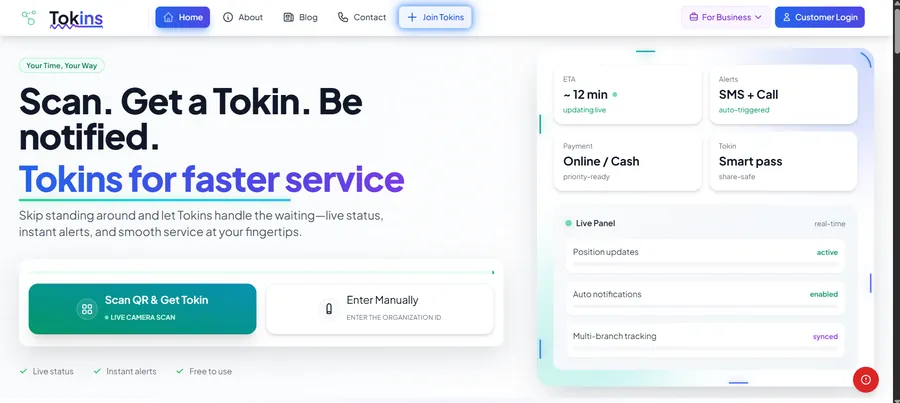

Tokins
A live queue and AI admin platform for clinics, pharmacies, retail and service centres.
Customers scan a QR code, get a token and follow their place in line live instead of standing around. Businesses get an admin panel with analytics, Razorpay payments and automated marketing over email, Telegram, Instagram and voice alerts, driven by an LLM pipeline.
Inside queue engine · reservations · staff & stock · multi-branch orgs · AI-written email campaigns · Instagram analytics · Telegram bot · spreadsheet import · k6 load tests
Queue-Management2024 · first idea WaitWise2025 · QR + Socket.io Tokins2025 → live
- Businesses served
- 100+
- Shorter average wait
- 40%
- User database in load tests
- 1M+
React · Node.js · MongoDB · Redis · Socket.io · AWS · Razorpay · Firebase Auth · LLM
Visit tokins.in Codebase is private
